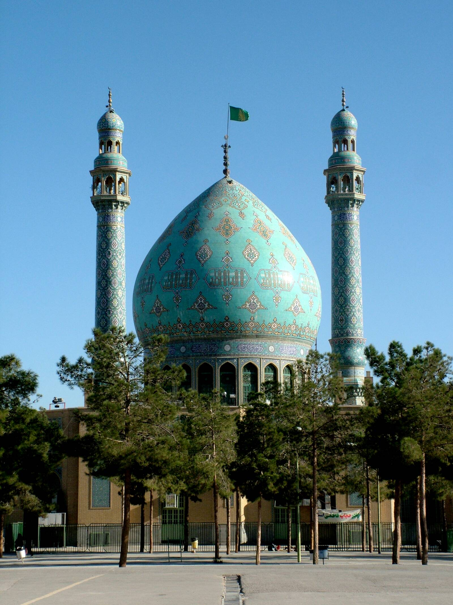
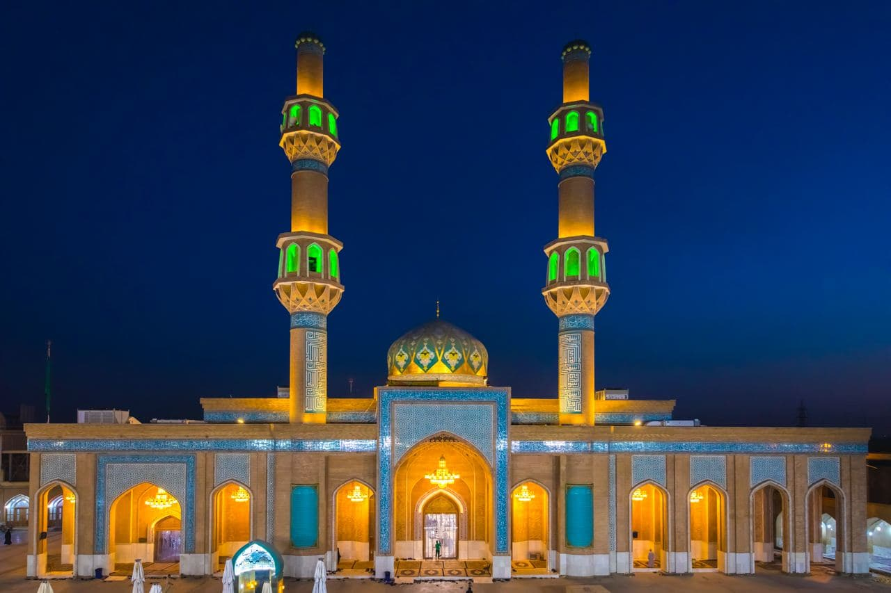

تسبیحات و ذکر نجات
تسبیحات حضرت فاطمه (س) و پیش از سخن گفتن، ۷ مرتبه ذکر شریف نجاتبخش:
«دفع هفتاد نوع بلا و شرور»
«اَللهُ اَکْبَرُ ۳۴ مرتبه ✦ اَلْحَمْدُ لِلّهِ ۳۳ مرتبه ✦ سُبْحانَ اللهِ ۳۳ مرتبه ✦ بِسْمِ اللَّهِ الرَّحْمَنِ الرَّحِیمِ، لاَ حَوْلَ وَلاَ قُوَّةَ إِلاَّ بِاللَّهِ الْعَلِیِّ الْعَظِیمِ ۷ مرتبه»
حمد الهی و استغفار
سه مرتبه ستایش پروردگار و سپس طلب آمرزش برای تمامی گناهان:
«آمرزش همه گناهان»
«الْحَمْدُ لِلّهِ الَّذِی یفْعَلُ مَا یشَاءُ، وَ لا یفْعَلُ مَا یشَاءُ غَیرُهُ ۳ مرتبه ✦ سُبْحَانَک لا إِلهَ إِلّا أَنْتَ، اغْفِرْ لِی ذُنُوبِی کلَّهَا جَمِیعاً، فَإِنَّهُ لا یغْفِرُ الذُّنُوبَ کلَّهَا جَمِیعاً إِلّا أَنْتَ»
سجده آخر نافله
نافله مغرب ۴ رکعت است (دو نماز ۲ رکعتی). در سجده آخر نافلهها (بهویژه شب جمعه) بگویید:
«آمرزش گناهان بزرگ»
«اللّهُمَّ إِنِّی أَسْأَلُک بِوَجْهِک الْکرِیمِ، وَاسْمِک الْعَظِیمِ، وَمُلْکک الْقَدِیمِ، أَنْ تُصَلِّی عَلی مُحَمَّدٍ وَآلِهِ، وَأَنْ تَغْفِرَ لِی ذَنْبِی الْعَظِیمَ، إِنَّهُ لَایغْفِرُ الْعَظِیمَ إِلّا الْعَظِیمُ ۷ مرتبه»
اذکار پایانی و دعای جامع
پس از اتمام نافله مغرب ۱۰ مرتبه ذکر استغفار و سپس دعای جامع بهشت و عافیت:
«همسایگی پیامبر (ص) در بهشت»
«مَا شَاءَ اللّهُ، لا قُوَّةَ إِلّا بِاللّهِ، أَسْتَغْفِرُ اللّهَ ۱۰ مرتبه ✦ اللّهُمَّ إِنِّی أَسْأَلُک مُوجِبَاتِ رَحْمَتِک، وَعَزائِمَ مَغْفِرَتِک، وَالنَّجاةَ مِنَ النَّارِ، وَالْفَوْزَ بِالْجَنَّةِ، وَجِوَارِ نَبِیک مُحَمَّدٍ (ص)»
رکعت اول
دستور قرائت: در رکعت اول پس از سوره حمد، به جای سوره توحید این آیه را بخوانید:
«سپس به رکوع و سجود میروید»
«وَ ذَا النُّونِ إِذْ ذَهَبَ مُغاضِباً فَظَنَّ أَنْ لَنْ نَقْدِرَ عَلَيْهِ فَنادىٰ فِي الظُّلُماتِ أَنْ لا إِلهَ إِلَّا أَنْتَ سُبْحانَكَ إِنِّي كُنْتُ مِنَ الظَّالِمِينَ، فَاسْتَجَبْنا لَهُ وَ نَجَّيْناهُ مِنَ الْغَمِّ وَ كَذٰلِكَ نُنْجِي الْمُؤْمِنِينَ»
رکعت دوم
دستور قرائت: در رکعت دوم پس از سوره حمد، به جای سوره توحید این آیه را بخوانید:
«سپس دستها را برای قنوت بالا میبريد»
«وَ عِنْدَهُ مَفاتِحُ الْغَيْبِ لا يَعْلَمُها إِلَّا هُوَ وَ يَعْلَمُ ما فِي الْبَرِّ وَ الْبَحْرِ وَ ما تَسْقُطُ مِنْ وَرَقَةٍ إِلَّا يَعْلَمُها وَ لا حَبَّةٍ فِي ظُلُماتِ الْأَرْضِ وَ لا رَطْبٍ وَ لا یابِسٍ إِلَّا فِي كِتابٍ مُبِينٍ»
قنوت و طلب حاجت
دستور قنوت: این دعا را بخوانید و به جای عبارت مشخصشده، حاجت شرعی و قلبی خود را بطلبید:
«سپس رکوع، سجود، تشهد و سلام را به جا آورید»
«اللّٰهُمَّ إِنِّي أَسْأَلُكَ بِمَفاتِحِ الْغَيْبِ الَّتِي لا يَعْلَمُها إِلَّا أَنْتَ أَنْ تُصَلِّيَ عَلىٰ مُحَمَّدٍ وَ آلِ مُحَمَّدٍ وَ أَنْ [حاجت خود را بر زبان آورید]... اللّٰهُمَّ أَنْتَ وَلِيُّ نِعْمَتِي وَ الْقادِرُ عَلىٰ طَلِبَتِي، تَعْلَمُ حاجَتِي، فَأَسْأَلُكَ بِحَقِّ مُحَمَّدٍ وَ آلِهِ عَلَيْهِ وَ عَلَيْهِمُ السَّلامُ لَمَّا قَضَيْتَها لِي»


مسجد مقدس جمکران

مسجد مقدس سهله
صَدَقَ اللهُ العَلِیُّ العَظیم
راست گفت خداوند بلندمرتبه و بزرگ